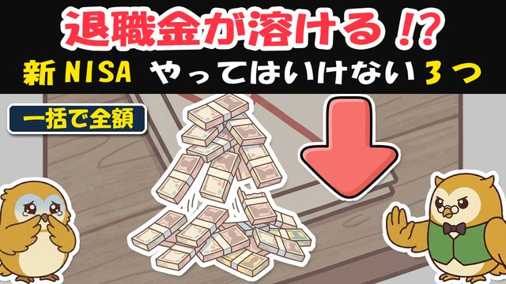

🎁 新NISA 3つの罠チェックシート（買う前に3つ自問するだけ）


よく来たな。約束の物を渡す。
この1枚は、買う前に3つ自問するだけのチェックシートだ。窓口や広告で何かを勧められた時、この3つを心の中で唱えてから決めればいい。ひとつでも「はい」が危ないサインだ。
罠① 「一度に全額」入れていないか
□ いま、まとまったお金を《一度に全部》入れようとしている
→ 上がり続ければ一括が有利なこともある。だが使う時期が近いお金まで全額入れて谷が来ると、こわくなって底値で売ってしまう。それが一番の損だ。
直し方
- すぐ使うお金は、そもそも入れない
- 残りも何回かに分けて、入れる時期をずらす
- 自分が夜ぐっすり眠れる配分にする
罠② 「毎月お金が入る」に釣られていないか
□ 《毎月分配型》など「毎月お金が入る」商品に心が動いている
→ 年金みたいで安心に見える。だが多くは、自分の元本を取り崩して配っているだけ（タコ足）。しかも新NISAのつみたて枠・成長枠では、そもそも対象外にされている。

直し方
- ふやす間は分配を出さない投信で、複利をきかせる
- お金が要るなら自分のタイミングで少しずつ取り崩す
- 「毎月自動で」より「必要な時に自分で」
罠③ 「流行り」に全部賭けていないか
□ 話題の《レバレッジ型・テーマ型・1つの国》に、まとめて乗ろうとしている
→ レバレッジ型は上げも下げも2倍・3倍。「みんな話題」の時は、もう高値のことも多い。なけなしの退職金で乗るのは危険だ。

直し方
- 土台は全世界株か全米株の低コスト投信を1本
- それだけで世界中に分散＝当てものにしない
- 流行りは、余ったお金でごく少しなら可
覚えておく数字（この4つだけ）
| 数字 | 意味 |
|---|---|
| 1,800万円 | 新NISAで非課税で持てる上限（1人）。器は十分大きい |
| 2倍・3倍 | レバレッジ型の値動き。上げも下げも増幅される |
| 半分→2倍 | 半値になったら、戻すには2倍必要（下げの傷は深い） |
| 対象外 | 毎月分配型は新NISA（つみたて・成長）で買えない＝国の判断 |
🎁 おまけ（動画では話していない）——退職金の「入れる順番」の考え方
まとまったお金は、入れる順番で気持ちが全然ちがう。
- まず「使う予定」を分ける——2〜3年以内に使うお金は、投資に回さず現金で置く（これが心の余裕になる）。
- 次に「土台」を時間で分けて入れる——残りを、たとえば十数回に分けて毎月。高値づかみ一撃を避ける。
- 最後に「遊び」はごく少し——流行りに乗りたい気持ちは、余ったお金の範囲で。土台には手をつけない。
順番は「守り→土台→遊び」。逆にやると、遊びで土台を溶かす。
蓄えは、あわてて全部入れないほど、長く残る。
低コストの分散を、時間をずらして。毎月の分配金にも、流行りにも、釣られるな。